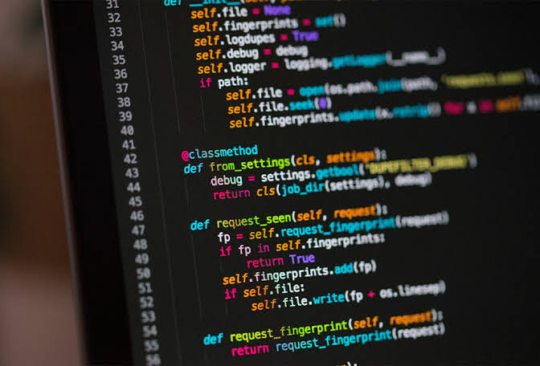

JavaScript
El lenguaje de la web: hace que las páginas respondan a tus clics. Esta misma página lo usa.

Programar es escribir instrucciones precisas, en un lenguaje que la computadora pueda entender, para resolver un problema o automatizar una tarea. Todo lo que usas a diario, como una app de mensajes, un videojuego o una página web, es un programa escrito por personas.
Antes de escribir una sola línea de código, un programador piensa en un algoritmo: los pasos ordenados que llevan de un problema a su solución. La computadora hace exactamente lo que se le pide, ni más ni menos, por eso los errores (llamados bugs) forman parte del trabajo diario.
El lenguaje de la web: hace que las páginas respondan a tus clics. Esta misma página lo usa.
No son lenguajes de programación en sentido estricto: HTML da estructura a la página y CSS define su aspecto.
Muy legible y fácil de aprender. Es el favorito para análisis de datos, automatización e inteligencia artificial.
Lenguaje para consultar y administrar bases de datos: "dame todos los alumnos de 4°B".
Muy rápidos y cercanos al hardware. Se usan en sistemas operativos, videojuegos y dispositivos embebidos.
Muy usado en aplicaciones empresariales y en Android. Su lema es escribir el programa una vez y ejecutarlo en cualquier lugar.
Es el primer programa que se escribe al aprender. Elige un lenguaje y compara cómo cambia la forma de escribir lo mismo.
print("Hola, mundo")Es un ejercicio muy famoso en entrevistas de programación. Se cuenta del 1 hasta el número que elijas: si es múltiplo de 3 se escribe "Fizz", si es múltiplo de 5 se escribe "Buzz", y si lo es de ambos, "FizzBuzz".
for (let i = 1; i <= n; i++) {
if (i % 15 === 0) salida = "FizzBuzz";
else if (i % 3 === 0) salida = "Fizz";
else if (i % 5 === 0) salida = "Buzz";
else salida = i;
}
No se encontraron términos con esa búsqueda.
Un algoritmo describe los pasos a seguir, y luego se traduce a un lenguaje de programación.
Los bucles (for, while) repiten un bloque de código sin tener que escribirlo muchas veces.
SQL significa Structured Query Language (lenguaje de consulta estructurado).